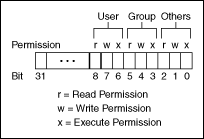

The file manager uses the int32 data type to describe permissions for files and directories. The manager uses only the least significant nine bits of the int32.
(Linux) The nine bits of permissions correspond exactly to nine Linux permission bits governing read, write, and execute permissions for user, group, and others. The following illustration shows permission bits on Linux.
(Windows) The file manager ignores permissions for directories. For files, the manager uses only bit 7 (the Linux user write permission bit). If this bit is clear, the file is read-only. Otherwise, you can write to the file.
(OS X) The file manager uses all nine bits for directories (folders). The manager uses the bits that control read, write, and execute permissions, respectively, on Linux to control See Files, Make Changes, and See Folders access rights, respectively, on Mac OS X.